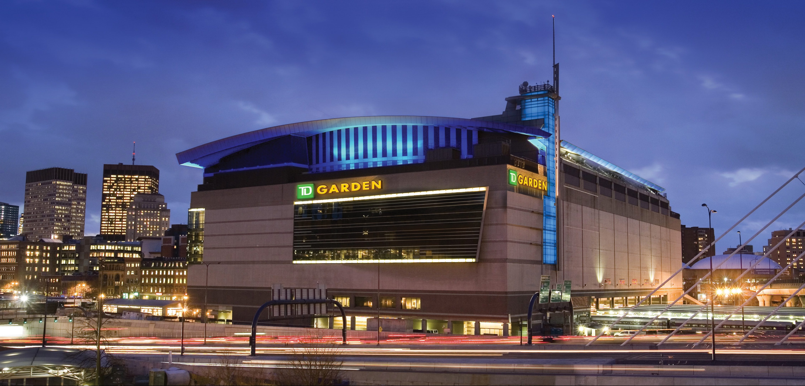

Intro:
Welcome to the Boston Bruins Webpage. As one of the original six teams in the National Hockey League (NHL), the Bruins have carved an indelible mark on the sport since their inception in 1924. This page serves as a comprehensive resource for fans and enthusiasts alike, offering a journey through the team's rich history, unforgettable moments, and the passionate fanbase that has made the Bruins a beloved institution in Boston and beyond.
Explore the heart of Bruins territory with a spotlight on TD Garden, the iconic arena where the team battles for victory. From the roar of the crowd to the electric atmosphere, TD Garden is more than a venue; it's a sacred space where the spirit of Boston Bruins hockey comes alive. Immerse yourself in the energy of the arena that has witnessed historic triumphs and created lasting memories for fans.
Unveil the essence of the Bruins with a closer look at the team's distinctive logo. The Black and Gold emblem symbolizes a tradition of excellence and the relentless pursuit of victory. Learn about the design elements that make the logo a powerful representation of the team's identity, embodying the pride, strength, and resilience that define the Boston Bruins.
Take a front-row seat to the action by diving into our curated video featuring highlights from the 2022 season. From jaw-dropping goals to spectacular saves, this compilation captures the essence of Bruins hockey at its finest. Join us in celebrating the skill, teamwork, and unforgettable moments that unfolded on the ice, showcasing the relentless determination that fuels the Boston Bruins. Whether you're a seasoned fan or new to the game, this video is a thrilling journey through the highs and lows of the 2022 season, encapsulating the heart and soul of Bruins hockey.
TD Garden

Bruins logo
Watch Bruins 2022 Highlight s
Back to top of page